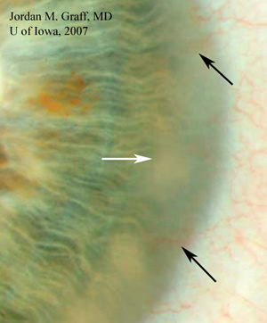

Cogan's syndrome
* Định nghĩa:
+ Hội chứng Cogan.
+ Một bệnh giác mạc hiếm gặp với đặc điểm là phát triển các mạch máu bất thường vào trong lớp nhu mô, viêm mống mắt thể mi nặng nề và điếc. Chủ yếu ở người trẻ.

Hình: Tại các điểm mũi tên chỉ là những phát triển mạch máu bất thường vào giác mạc